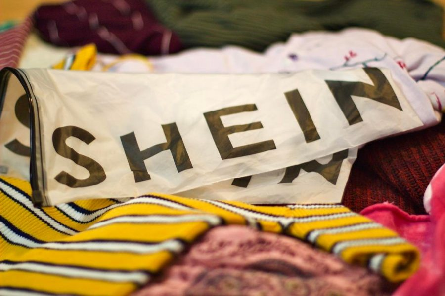
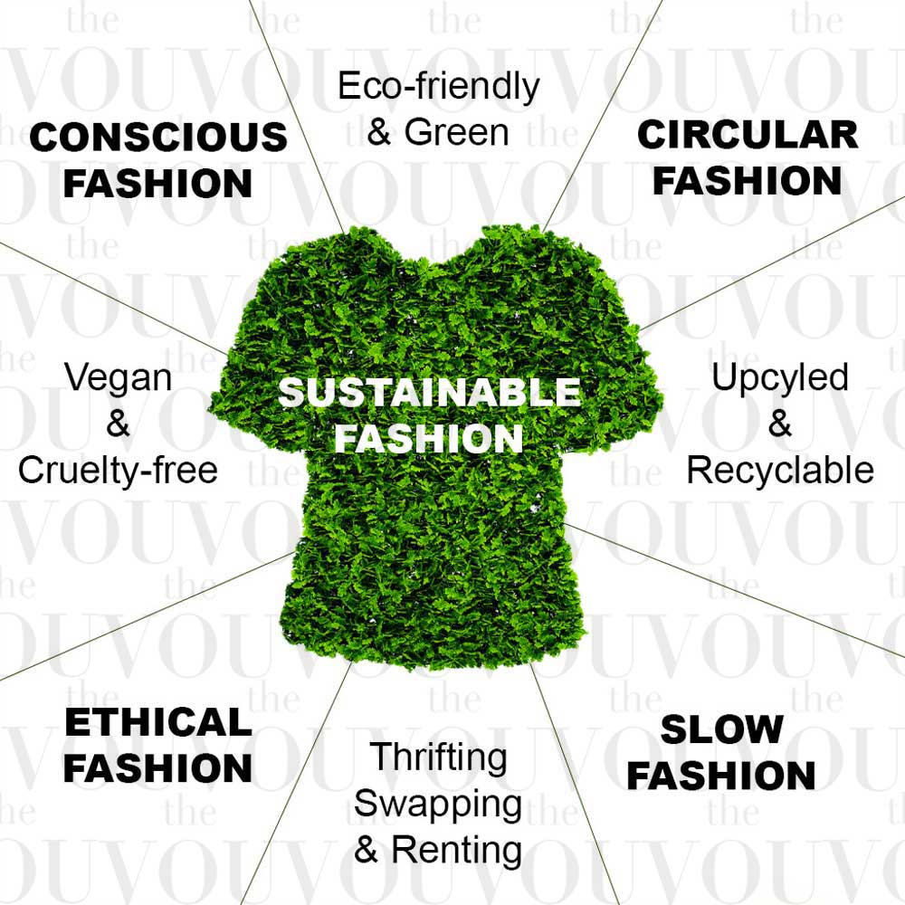
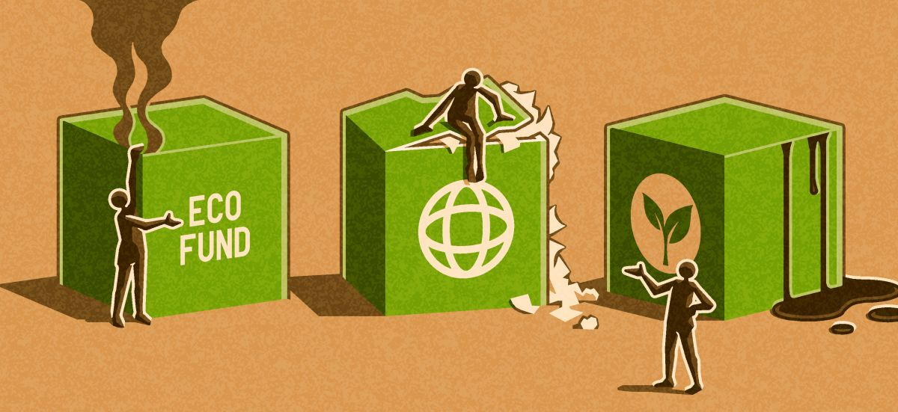
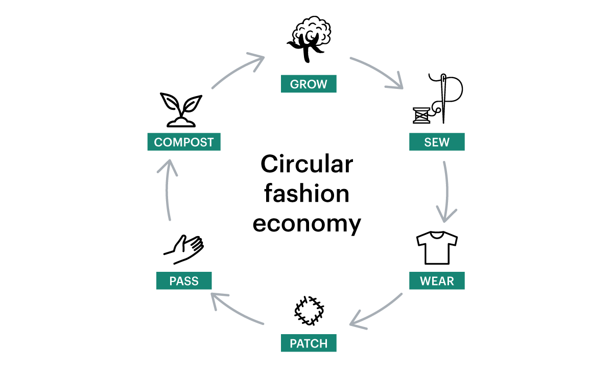

| Fast Fashion | Sustainable Fashion | Greenwashing | Circular Fashion |
|---|---|---|---|
|
At its most basic definition, Fash Fashion is mass produced cheaply
made, extremely trendy items, usually sold at and extremely low price
point. This type of clothing is extremely trendy, so it needs to be
produced at unnatural speeds to meet consumer demands and stay on
trend. These items are usually worn a few times and then discarded. It
is a key part of the problem as it contributes to overproduction and
over consumption.
 |
Sustainable fashion is defined as the balance between designing,
manufacturing and consuming clothes. Sustainable fashion avoids
exhaustion of natural resources as well as avoids the exploitation of
individuals and communities.
 |
Greenwashing is defined as the use of misleading marketing practices
to depict and organization's products, activities or policies as
environmentally friendly, when the opposite is true. Words that
companies use in greenwashing campaigns are: "zero-waste," "eco
friendly," "all natural," "biodegradable." There is little to no
regulation for these terms and can mislead and manipulate consumers.
 |
Circular fashion is about creating a system that eliminates waste and
pollution our of our clothes and ensures practices that promote
regeneration and reuse.
 |